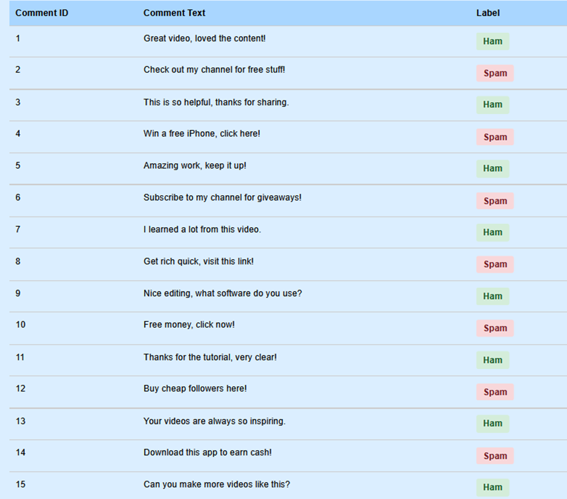

Problem
The comment sections on YouTube are often flooded with spam — repetitive, promotional, or malicious content that disrupts meaningful interactions. These spam comments not only clutter the platform but also undermine user experience by impeding genuine discussions and exposing users to potential cybersecurity threats, such as misinformation or malware.
Solution: Random Forest Classifier
To tackle the issue of spam in YouTube comments, we can implement a Random Forest Classifier, which has demonstrated exceptional performance in spam detection.
Random Forest Effectiveness:
- High Accuracy: Provides reliable and precise predictions.
- Works with Larger Datasets: Efficient processing of high-dimensional data.
- Handles Missing Values: Robust against incomplete data.
- Reduces Overfitting: Ensures generalization to unseen data.
How Random Forest Works
- Each tree makes its own decisions independently.
- Random parts of the data are used to train each tree, reducing mistakes.
- Having sufficient data ensures that trees learn unique patterns.
- Combining predictions from multiple trees improves overall accuracy.
Implementation Steps
Step 1: Collect and Label the Dataset
Start with a small dataset of 15 YouTube comments, manually labeled as "Ham" (0) or "Spam" (1).
Step 2: Preprocess the Text Data
Convert raw text into a format suitable for the Random Forest model:
- Convert text to lowercase
- Remove punctuation and stop words
- Tokenize the text
Step 3: TF-IDF Vectorization
Each comment is represented as a 42-dimensional vector using the TF-IDF technique.
Step 4: Train and Test the Random Forest Algorithm
Python Code Example:
import pandas as pd
from sklearn.model_selection import train_test_split
from sklearn.ensemble import RandomForestClassifier
from sklearn.metrics import accuracy_score, classification_report
from sklearn.feature_extraction.text import TfidfVectorizer
import warnings
warnings.filterwarnings('ignore')
# Sample Data
data = {
'Comment': [
"Great video, loved the content!",
"Check out my channel for free stuff!",
"This is so helpful, thanks for sharing.",
"Win a free iPhone, click here!",
"Amazing work, keep it up!",
"Subscribe to my channel for giveaways!",
"I learned a lot from this video.",
"Get rich quick, visit this link!",
"Nice editing, what software do you use?",
"Free money, click now!",
"Thanks for the tutorial, very clear!",
"Buy cheap followers here!",
"Your videos are always so inspiring.",
"Download this app to earn cash!",
"Can you make more videos like this?"
],
'Label': [0, 1, 0, 1, 0, 1, 0, 1, 0, 1, 0, 1, 0, 1, 0]
}
# Convert to DataFrame
df = pd.DataFrame(data)
# Vectorize text data
vectorizer = TfidfVectorizer(lowercase=True, stop_words='english')
X = vectorizer.fit_transform(df['Comment'])
y = df['Label']
# Train-test split
X_train, X_test, y_train, y_test = train_test_split(X, y, test_size=0.2, random_state=42)
# Random Forest Model
rf_classifier = RandomForestClassifier(n_estimators=100, random_state=42)
rf_classifier.fit(X_train, y_train)
# Predictions and evaluation
y_pred = rf_classifier.predict(X_test)
accuracy = accuracy_score(y_test, y_pred)
classification_rep = classification_report(y_test, y_pred)
print(f"Accuracy: {accuracy:.2f}")
print("\nClassification Report:\n", classification_rep)
# Predict on a sample comment
sample = X_test[0:1]
prediction = rf_classifier.predict(sample)
sample_text = df.iloc[X_test.indices[0]]['Comment']
print(f"\nSample Comment: {sample_text}")
print(f"Predicted Label: {'Spam' if prediction[0] == 1 else 'Ham'}")